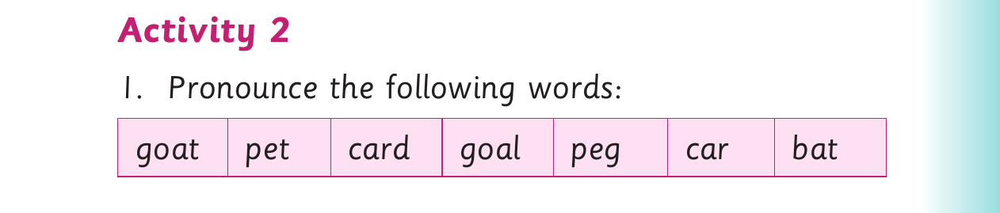

Using different sounds - continued
3. Pronounce the first sound in each word. Then, read the words aloud.
Example: p in- t in
(a) log-fog (b) bend-mend (c) log-dog
4. Read the following sentences aloud: (a) I put a pin in a tin. (b) A soldier can run with a gun. (c) The cat chased the bat. (d) The fan cooled the van. (e) A fox hid in the box. (f) I saw a fat rat on a mat. (g) Tie the dog to the log. (h) There was a loud bark in the park.

Activity 2 1. Pronounce the following words: goat pet card goal peg car bat

2. Name the following pictures: (a) (b) (c)